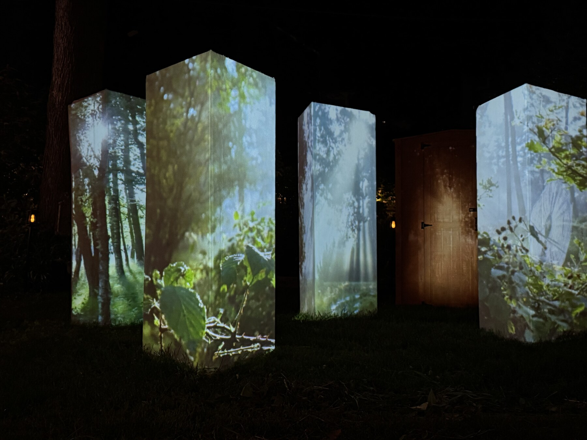

Shed — On-Set Projection Mapping
Projection Artist for a practical in-camera memory sequence.

Role / Contribution
For the short film Shed, I worked as Projection Artist on a nighttime memory sequence involving forest imagery projected across multiple vertical muslin-covered panels. Working with the director, DP/camera team, production team, and the scenic setup, I helped plan the projection workflow, evaluate projector brightness and surface constraints, set up a MadMapper-based mapping approach, and operate and troubleshoot projection playback during the shoot.
Scene Context
Scene 21 is an exterior backyard memory sequence built around forest, memory, and transformation imagery. The projection surfaces were scenic pillar and panel elements surrounding the shed environment—not the shed itself—and the goal was to create a dreamlike atmosphere for camera rather than present projection as a technology spectacle.
Directed by Stephanie Jeter; executive produced by Lilly Wachowski.
Projection Mapping Workflow
I used MadMapper to align, mask, and warp forest imagery across multiple physical panel surfaces from a single projector. The media was organized into practical looks and cues that could move between blackout and active projection states, allowing rapid adjustment during setup and shooting. The result was a camera-ready practical projection setup that combined multi-surface mapping, live media operation, and projector calibration.
Production Constraints / On-Set Planning
The micro-budget exterior-night setup had limited build and calibration time, while the muslin surfaces absorbed and softened projected light. I evaluated throw distance, projector placement, brightness, and camera exposure, and helped production move toward a brighter 5000-lumen rental projector rather than relying on consumer units. Planning also accounted for flicker and banding, camera-axis placement, clean plates, and areas that might require VFX paintout in post.
Tools / Technical Workflow
- MadMapper for multi-surface alignment, masking, and warping
- Single-projector playback using a 5000-lumen production workflow
- Projection-surface, throw-distance, and camera-exposure planning
- On-set cueing, calibration, playback, and troubleshooting
- Clean-plate and VFX-aware planning for post-production flexibility
Outcome
The result was a camera-ready practical projection setup for a narrative memory sequence, connecting projection mapping and live media operation with camera-aware, VFX-conscious production planning.